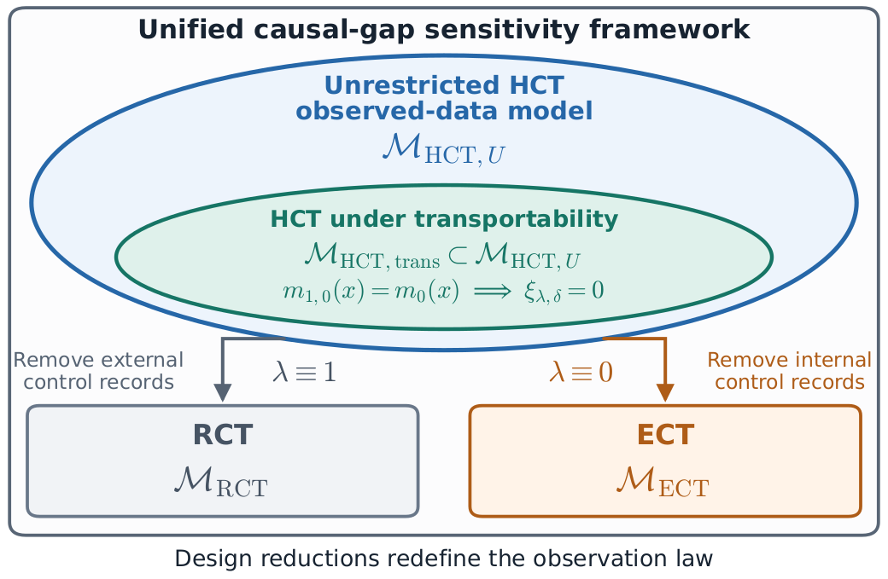

Statistical theory · Theorem 1 and Corollaries 1–3
One hybrid trial, three reductions
What changes in the efficient influence function (EIF) when the two control means agree? What changes when an entire control group is absent? Choose a model to see its equation, then follow one observation through the calculation.

Unrestricted hybrid trial
Worked example · finite outcome distribution
Evaluate one record
At baseline stratum X = x, the treated mean is 1 + 0.4x. In a randomized trial or hybrid trial the internal control mean is 0.4x. Where external controls are present their mean starts at 0.4x and can be shifted downward or upward. Under the common-mean restriction their mean is 0.4x. The trial arms have variance one.
Outcome distribution and baseline mix
Within each observed group and stratum, Y = m + √v Z, where m and v are its conditional mean and variance. Z takes the values −√3, 0, and √3 with probabilities 1/6, 2/3, and 1/6. These give mean zero, variance one, third moment zero, and fourth moment three, matching a standard Gaussian through its fourth moment. The example enumerates these three outcomes exactly. The variance-correction terms involve squared residuals, so their covariances and variances can change under other third and fourth moments.
With the same baseline mix, half of each source has X = 1. With a different mix, two thirds of the trial and one third of the external cohort have X = 1. In the RCT the trial mix alone is used.
| Contribution | Value |
|---|
The bound B is the expected squared EIF under the selected law. The calculation uses independent observations with the displayed source and allocation probabilities. Sample sizes scale the bound, and group counts are expected counts. The calculation concerns uncertainty around the selected target. When the borrowing target differs from the trial effect, its standard error does not measure that gap.
Repeat the example in R
Download the base R example and run source("model-reductions.R"). It prints the four targets and bounds at the default settings. To see why the extra terms are needed, perturb an outcome distribution in the EIF lab.